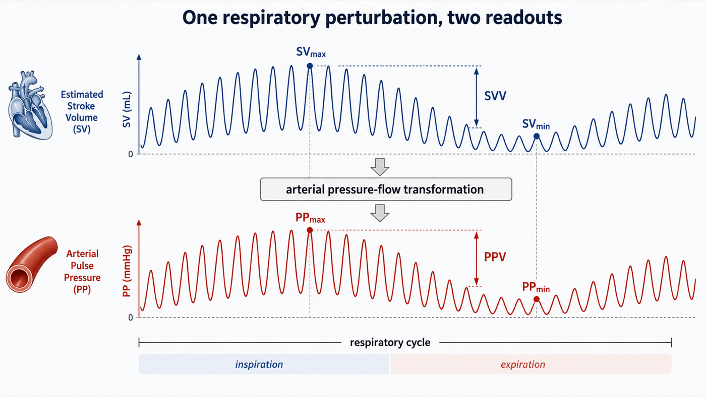
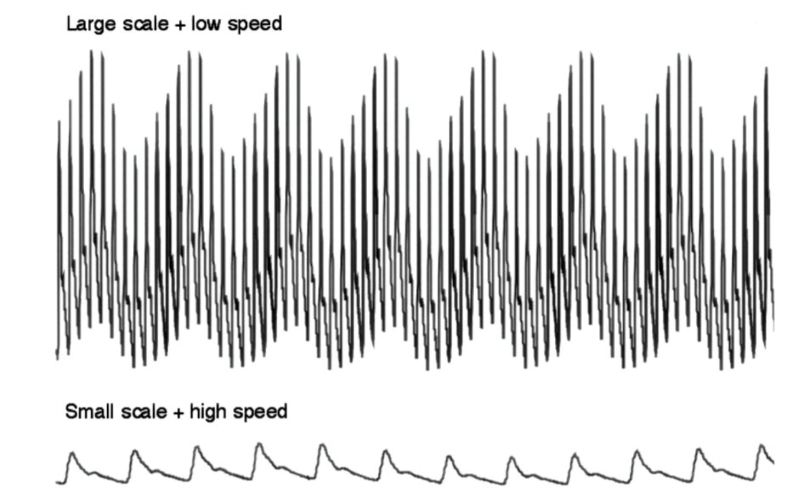
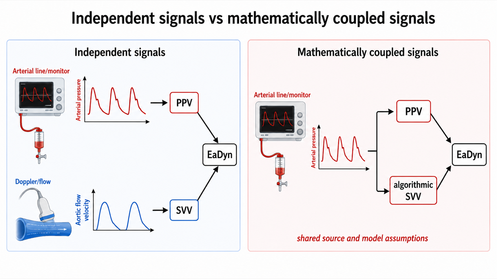

Module I13
Evaluating arterial systolic and pulse pressure variation
Module I12 followed a positive pressure breath through the circulation and left the arterial trace oscillating. Inspiration changes the pressure surrounding the heart and great vessels, alters systemic venous return and right ventricular loading, and produces a respiratory change in right ventricular output. After transit through the pulmonary circulation, that change reaches the left ventricle and appears as a cyclic change in left ventricular stroke volume. This module starts there and turns the mechanism into a measurement.
Positive-pressure ventilation is therefore more than a way of moving gas. In a passive patient it is a cardiovascular provocation repeated several times every minute. Each breath perturbs the circulation, and the size of the resulting change in stroke volume contains information about where the cardiopulmonary system is operating on its function curve. The arterial pressure waveform gives one way to observe that response, and a stroke volume monitor gives another.
The important distinction is that these are responses to a provocation, not measurements of blood volume. A large respiratory variation does not report how much blood the patient has. It reports that, under the current conditions, cardiac output changes substantially when preload and right ventricular loading are cyclically perturbed. Each breath transiently changes the conditions governing venous return and cardiac output, moving the operating point of the circulation and producing a cyclic change in flow. Systolic pressure variation, pulse pressure variation and stroke volume variation are different ways of observing the downstream consequences of that same repeated perturbation.
From the ventilator to the arterial trace
Reading preload responsiveness from an arterial waveform is an inference built from a chain of physiologic events. The ventilator delivers a tidal volume. Some fraction of the pressure required to deliver that breath reaches the pleural space. The resulting change in intrathoracic pressure alters venous return, right ventricular filling and right ventricular afterload, the quantities Module I3 frames in terms of transmural pressure. The change in right ventricular output then travels through the pulmonary circulation and changes left ventricular filling a few beats later, so left ventricular stroke volume varies over the respiratory cycle. Finally, that variation in stroke volume is transformed by the arterial system into a variation in pressure and recorded through the catheter-transducer system.
This chain matters because every requirement for the validity of these indices belongs somewhere along it. Spontaneous effort changes the provocation. Lung and chest wall mechanics change pressure transmission. Arrhythmia changes stroke volume independently of respiration. A high respiratory rate can prevent the delayed right-to-left signal from being fully expressed. Right ventricular failure creates respiratory stroke volume variation for an afterload reason rather than a preload reason. The arterial system determines how much pressure results from a given stroke volume. Finally, damping, resonance, sampling site and pulse contour algorithms determine whether what appears on the monitor faithfully represents what happened in the patient. The usual checklist of contraindications is therefore not really a list. It is this causal chain read backwards, and the advantage of learning the chain is that it also explains why a particular condition creates a false positive, a false negative or a completely uninterpretable signal.
![A vertical chain of five boxes running from the ventilator delivering a tidal volume, to transmission of that pressure into the pleural space, to the resulting change in transmural pressure across the great veins and both ventricles, to the change in stroke volume that depends on the slope of the function curve, to the appearance of that change as a swing in pulse pressure. Beside each arrow, a red annotation names the conditions that break that particular link: spontaneous effort, a triggered breath or an arrhythmia at the first; low tidal volume, a stiff lung, an open chest or a tense abdomen at the second; too few beats per breath or right ventricular failure at the third; and a vasopressor or vasodilator moving the operating point at the fourth.](img/i13-transmission-chain.svg)
The last two links deserve particular attention. Module I4 established that the arterial system does not passively display stroke volume. It transforms an ejected volume into a pressure waveform, and as a useful first approximation,
Over a few beats, if arterial properties and the pattern of ventricular ejection remain reasonably stable, a larger stroke volume generally produces a larger pulse pressure, and respiratory changes in pulse pressure therefore track respiratory changes in stroke volume. This is the basic licence for reading a flow-related signal from a pressure trace, and it holds only over a short window. Arterial compliance determines how a given change in arterial volume is translated into pressure, so the same stroke volume can generate different pulse pressures depending on the pressure-volume properties of the arterial tree at the time. The pressure created by a given stroke volume also depends on characteristic impedance, peripheral runoff, wave transmission and reflection, the site where the pressure is measured, and the timing and acceleration of ventricular ejection. That distinction becomes important later in this module, because it explains why pulse pressure variation and stroke volume variation are closely related without being identical, and why their ratio can contain additional information.
Systolic pressure variation, where the signal was first found
Perel and colleagues defined systolic pressure variation in 1987 as the difference between the maximum and the minimum systolic pressure following a single positive pressure breath, divided into two components measured against the systolic pressure during a five second apnoea. They fitted the dogs with a continuously inflated vest around the chest in order to hold the ratio of lung to chest wall compliance near the human value of 0.83, so the founding study of this whole literature had to engineer the pressure transmission fraction before the model would behave like a person. That fact is a warning about the second link of the chain, delivered decades early.
ΔUp = SBPmax − SBPref
ΔDown = SBPref − SBPminSBPmax and SBPmin, the highest and lowest systolic pressures over one respiratory cycle; SBPref, the reference systolic pressure taken during a short end-expiratory apnoea. SPV is reported in mmHg rather than as a percentage, which matters for comparing one patient with another.
![An arterial pressure tracing across two respiratory cycles with the reference baseline drawn as a horizontal dashed line through the systolic pressure of the end-expiratory beat. Vertical blue markers show the total systolic pressure variation as the distance between the highest and lowest systolic peaks, delta up as the excursion of the highest peak above the reference baseline, and delta down as the fall of the lowest peak below it. Red vertical arrows mark the largest and smallest pulse pressures on the same tracing, labelled PP max and PP min. An arrow at the bottom identifies the end expiratory phase.](img/hemodynamics-module-v2022-full_slide177_6241b2ad.png)
The decomposition matters more than the total number, because ΔUp and ΔDown arise from different physiology and at different times.
What each component is reporting
ΔDown is the delayed right sided signal. Positive-pressure inspiration can reduce venous return and increase right ventricular afterload, so right ventricular stroke volume falls. That deficit does not reach the systemic arterial circulation immediately, it first traverses the pulmonary circulation, and two to four beats later left ventricular filling falls, left ventricular stroke volume decreases, and systolic pressure falls. In a patient operating on the steep portion of the cardiac function relationship the change is large, and the size of ΔDown therefore contains much of the preload-responsiveness information that made SPV useful.
ΔUp is the immediate left sided signal. During positive-pressure inspiration, the rise in intrathoracic pressure can transiently displace pulmonary blood toward the left atrium and decrease left ventricular transmural pressure during ejection, reducing the effective pressure against which the LV ejects. Both effects can transiently increase left ventricular stroke volume and systolic pressure, so ΔUp is not simply another manifestation of preload responsiveness. It may become particularly prominent when the left ventricle is afterload sensitive or when pulmonary blood volume is substantial. A large total SPV cannot automatically be translated into hypovolaemia: the same number may be produced predominantly by a large ΔDown, predominantly by ΔUp, or by a combination of both, and the original decomposition was designed precisely to expose that distinction.
The experimental history is useful because it demonstrates how dynamic measurements outperformed the static filling pressures they were developed to replace. In ten ventilated dogs bled in steps of five, ten, twenty and thirty percent of estimated blood volume, systolic pressure variation tracked the volume removed with a rank correlation of 0.993 and ΔDown with 0.981, both far better than central venous pressure. A companion experiment tested whether the signal is specific to hypovolaemia rather than to hypotension: dogs brought to a mean arterial pressure of 50 mmHg by haemorrhage had a systolic pressure variation of 15.7 (S.D. +/- 6.7 mmHg), against 9.1 (S.D. +/- 2.0 mmHg) in dogs brought to the same pressure by sodium nitroprusside, while central venous and wedge pressures did not differ between the groups at all. Tavernier and colleagues subsequently studied fifteen patients with sepsis-induced hypotension across thirty-five graded volume loading steps and found that ΔDown predicted response to volume loading better than left ventricular end-diastolic area on transoesophageal echocardiography or pulmonary artery occlusion pressure. A ΔDown above 5 mmHg carried a positive predictive value of 95 percent and a negative predictive value of 93 percent in that small selected cohort, a feature of the arterial trace beating an echocardiographic measurement of the ventricle itself.
Why almost nobody measures the components
SPV nevertheless carried two practical problems. First, separating ΔUp and ΔDown requires a reference systolic pressure during an expiratory pause, which prevents routine automatic measurement, so bedside monitors report only the total swing. Second, SPV is expressed as an absolute pressure difference in mmHg. A 10-mmHg swing does not mean the same thing when the baseline pulse pressure is 25 mmHg as when it is 70 mmHg, and no normalisation is built into the definition. Pulse pressure variation solved much of that problem.
Pulse pressure variation, turning the waveform into a normalised signal
Part of the respiratory change in systolic pressure can reflect the direct transmission of intrathoracic pressure to the arterial system rather than a change in ejected volume, since the thoracic aorta sits inside the chest. Pulse pressure reduces that common-mode effect because systolic and diastolic pressure from the same beat are exposed to approximately the same surrounding-pressure perturbation. Subtracting diastolic from systolic pressure therefore emphasises the pulsatile pressure generated by ventricular ejection. This is the same manoeuvre the Wheatstone bridge performs in the transducer described in Module I3: take a difference across two arms and any influence acting equally on both disappears from the output.
Michard and colleagues established the classic clinical result in forty mechanically ventilated patients with acute circulatory failure related to sepsis. Before fluid, the respiratory change in pulse pressure was 24 (S.D. +/- 9 percent) in the sixteen responders against 7 (S.D. +/- 3 percent) in the twenty-four non-responders, while the change in systolic pressure was 15 (S.D. +/- 5) against 6 (S.D. +/- 3 percent). A threshold of 13 percent separated responders from non-responders with a sensitivity of 94 percent and a specificity of 96 percent in that tightly selected population, and the baseline value predicted the size of the rise in cardiac index with an r2 of 0.85. Volume expansion then halved the variation, from 14 (S.D. +/- 10) to 7 (S.D. +/- 5 percent), and the magnitude of the fall tracked the increase in cardiac index. The important part is not that 13 percent became a familiar number. It is that a respiratory pressure signal contained information about the slope of the patient's cardiac function curve.
The pooled comparison came from a systematic review of twenty-nine studies enrolling 685 patients, of whom 56 percent responded to a fluid challenge. The areas under the curve were 0.94 for pulse pressure variation, 0.86 for systolic pressure variation and 0.84 for stroke volume variation, against 0.55 for central venous pressure and 0.64 for left ventricular end-diastolic area index. The mean threshold was 12.5 (S.D. +/- 1.6 percent) for pulse pressure variation and 11.6 (S.D. +/- 1.9 percent) for stroke volume variation, and the two should not be taught as interchangeable indices with one universal threshold.
Stroke volume variation, observing the flow signal directly
If PPV observes the pressure consequence of respiratory stroke volume variation, SVV attempts to measure the stroke volume variation itself.

Conceptually, SVV sits one step upstream of PPV. Positive-pressure ventilation creates the respiratory variation in stroke volume, and the arterial system then converts that changing volume into a changing pulse pressure. PPV therefore includes information from both the cardiopulmonary generation of the stroke-volume oscillation and the arterial transformation of that oscillation into pressure, while SVV attempts to report the first more directly. How independent that SVV signal really is depends on how stroke volume is measured. If the respiratory change in stroke volume is obtained from a genuinely independent flow measurement, such as an appropriate Doppler-derived aortic flow signal, it represents a separate observation of the same physiologic perturbation. If SVV is generated by a pulse contour monitor from the same arterial pressure waveform used to calculate PPV, it is not an independent second opinion, it is a model-derived estimate built from the same waveform, a point that becomes critical once PPV and SVV are divided by one another later in this module. The historical thresholds are also not identical: the mean threshold in the pooled analysis above was approximately 12.5 percent for PPV and 11.6 percent for SVV, and SVV should retain its own threshold history rather than being assigned the same value.
What PPV and SVV are actually asking
Both PPV and SVV are most useful when interpreted as preload-responsiveness tests. Their question is: if cardiac preload increases under these conditions, is stroke volume likely to increase? That is not the same as asking whether the patient is hypovolaemic. A patient can be preload responsive with a normal or increased circulating volume, and preload responsiveness does not mean the patient needs more cardiac output, that fluid is the appropriate way to increase preload, or that fluid administration would be safe. Those are separate clinical questions developed in Module I11.
This distinction matters because the dynamic indices can change without any restoration of lost blood volume. In an experimental haemorrhage study, norepinephrine reduced PPV and SPV despite the fact that none of the removed blood had been returned. Venoconstriction recruited stressed volume and changed the operating point of the circulation, while at the same time norepinephrine altered the arterial system through which the pressure signal was being generated. A falling PPV during vasopressor treatment is therefore not evidence that the vascular compartment has somehow been filled.
Where twelve or thirteen percent comes from
A threshold is not a physiologic constant. It is the cut point that best separated responders from non-responders in a particular population, using a particular intervention, a particular definition of response, and a particular method of measuring stroke volume or cardiac output. Michard's original study produced the familiar 13 percent PPV threshold, and the 2009 pooled analysis of 29 studies and 685 patients found a mean PPV threshold of 12.5 (S.D. +/- 1.6 percent).
| Source | Population | Size | Area under the curve | Threshold |
|---|---|---|---|---|
| Michard 2000 | Septic shock, passively ventilated, single centre | 40 | Not stated | 13 % |
| Marik 2009, pooled review | Mixed, 29 studies of ventilated patients | 685 | 0.94 | 12.5 (S.D. +/- 1.6) % |
| Yang 2014, meta-analysis | Intensive care, restricted to tidal volume above 8 mL/kg, no spontaneous effort, no arrhythmia | 807 | 0.94 | Threshold effect present |
| Messina 2023, pooled review | Surgical patients in the operating room, 59 studies, unrestricted | 2947 | 0.77 | 10.8 % |
The apparent contradiction between the rows is useful. A subsequent meta-analysis restricted to mechanically ventilated patients without spontaneous effort or arrhythmia and generally using larger tidal volumes found a pooled sensitivity of 0.88 and specificity of 0.89, an excellent test. The 2023 meta-analysis of 59 operating room studies and 2,947 patients, with considerably broader populations and conditions, reported an overall area under the curve of only 0.77 and a mean threshold around 10.8 percent. The best performance comes from the populations in which the physiologic assumptions are most tightly controlled, so the diagnostic accuracy of PPV is partly a property of the test and partly a property of the population in which it is applied. Two further choices, buried in the methods sections, also move the threshold: the definition of a responder, almost always a rise in cardiac index or stroke volume of 15 percent, and which flow measurement defines the truth, since a meta-regression of thirty-three studies found that the method used to measure cardiac output significantly influenced the apparent performance of both indices.
For this module, the practical formulation should be: when classical validity conditions are satisfied, PPV values around 12 to 13 percent have traditionally supported preload responsiveness. When a protocol requires one operational value, 13 percent is a reasonable historical threshold and is the value used in the ANDROMEDA-SHOCK 2 trial. The number should not be interpreted independently of the conditions under which it was obtained, and SVV should retain its own threshold history, approximately 11.6 percent in the same pooled analysis, rather than being assigned the same 12 to 13 percent value.
The grey zone
A single cutoff forces every patient into one of two categories, which misrepresents what a test does when its two distributions overlap. The grey zone approach reports instead the range of values within which the test does not classify reliably, together with the proportion of patients who land there. Applied to pulse pressure variation it produces the most useful single result in this literature.
![Two horizontal bars, both scaled to the same pulse pressure variation axis running from zero to twenty-five percent. The upper bar represents 413 operating room patients under general anaesthesia with an area under the curve of 0.89: a green region below nine percent labelled test says no, a grey band from nine to thirteen percent labelled grey zone containing twenty-four percent of patients, and a red region above thirteen percent labelled test says yes. The lower bar represents 556 intensive care patients across nine centres with an area under the curve of 0.73: a much narrower green region below four percent, a wide grey band from four to seventeen percent containing sixty-two percent of patients, and a red region above seventeen percent. A dashed red vertical line at 12.5 percent marks the pooled threshold and falls inside both grey bands.](img/i13-grey-zone.svg)
In 413 patients under general anaesthesia across four centres, pulse pressure variation had an area under the curve of 0.89 against 0.57 for central venous pressure, and the grey zone ran from 9 to 13 percent, containing 98 patients or 24 percent of the cohort. In 556 patients pooled from nine French intensive care units the area under the curve was 0.73 and the grey zone ran from 4 to 17 percent, containing 62 percent. Those patients had already been selected for satisfying the validity prerequisites, and in them values across that whole range did not predict fluid responsiveness. The practical reading of a grey zone value is not a small correction to the usual one. A pulse pressure variation of 11 percent in an intensive care patient is not a negative test, and it is not a weakly positive one either. It is a non-answer, and the response is to reach for a provocation whose assumptions the patient does satisfy, which is what the selection table in Module I11 is for. The commonest error is to treat a grey zone value as confirmation of whatever you were already inclined to do.
The same analysis shows what the cutoff ought to depend on. When the intensive care data were reanalysed weighting for the harm of giving fluid to a hypoxaemic patient who would not benefit, the grey zone shifted down to 2 to 13 percent, because the cost of a false positive had risen. A threshold is a decision, not a fact, and it should move with the consequences of being wrong in each direction.
The chain, link by link
Once the test is understood as a controlled physiologic experiment, its limitations become predictable. Each failure mode either changes the provocation, changes the cardiovascular response for the wrong reason, prevents the response from completing, alters the conversion from flow to pressure, or corrupts the measurement itself.
The breath must be controlled
The respiratory perturbation has to be sufficiently reproducible that the largest and smallest beats can reasonably be attributed to ventilation. Spontaneous respiratory effort destroys that assumption in two ways at once. It changes the sign, since a spontaneous inspiration lowers rather than raises pleural pressure, and the magnitude of that pressure change varies from breath to breath. A patient intermittently triggering a ventilator may therefore receive a nominally controlled tidal volume while adding an unknown inspiratory effort of their own. The relevant criterion is not the name of the ventilator mode, it is whether the patient is passive during the respiratory cycles used for the measurement.
The empirical result is dramatic. In 21 critically ill patients with spontaneous respiratory movements, nine on pressure support and twelve breathing through a face mask, respiratory pulse pressure variation ranged widely, from 0 to 49 percent at baseline, and did not distinguish fluid responders from non-responders. Its area under the curve was 0.40, worse than a coin toss, while pulmonary artery occlusion pressure managed 0.73 in the same patients. A test that inverts is more dangerous than one that is merely silent.
There is a second mechanism for failure during spontaneous breathing. A strong inspiratory effort lowers right atrial pressure and increases the gradient for venous return only until the great veins themselves become flow limited, the ceiling Module I8 establishes. Beyond that point, a larger pressure gradient does not necessarily produce more venous return, so a patient may generate a large inspiratory effort but little additional stroke volume variation, creating a false sense of preload independence even though filling would raise cardiac output by lifting the ceiling itself. A patient who triggers the ventilator, even intermittently and even in a mode that looks controlled on the screen, has contributed effort of unknown size.
The perturbation must reach the pleural space
The traditional requirement of a tidal volume around 8 mL/kg predicted body weight arose because low tidal volumes can create a respiratory perturbation too small to expose preload responsiveness. In sixty ventilated patients requiring a fluid challenge, a 12 percent pulse pressure variation classified patients correctly 88 percent of the time above 8 mL/kg and only 51 percent of the time below it, essentially chance, and 8 mL/kg was the value that best separated the two behaviours. A small PPV measured during a 6 mL/kg breath therefore does not by itself establish preload independence, but tidal volume is only a proxy for the variable that matters: how much pleural pressure actually changes.
The airway pressure applied by the ventilator is divided between expansion of the lung and deformation of the chest wall:
![Three side by side chest cross-sections, each receiving the same applied airway pressure. In normal mechanics the pressure divides moderately between transpulmonary and pleural pressure, giving a moderate cardiovascular perturbation. With a stiff lung, most of the airway pressure is consumed expanding the lung, transpulmonary pressure is large, pleural pressure change is small, and the cardiovascular perturbation is small. With a stiff chest wall or abdomen, transpulmonary pressure change is small, pleural pressure change is large, and the cardiovascular perturbation is large. A caption states that PPV responds to the pleural pressure perturbation, not to airway pressure itself.](img/i13-pleural-transmission-mechanics.png)
If the respiratory system is stiff predominantly because the lung is stiff, a relatively large airway pressure may be required to inflate the lung while comparatively little is transmitted to the pleural space, so the cardiovascular provocation can remain small despite an impressive airway pressure. If the respiratory system is stiff predominantly because the chest wall or abdomen is stiff, a larger fraction of airway pressure may instead appear as pleural pressure and the cardiovascular perturbation may be amplified. A study of 54 patients with circulatory shock, including patients with ARDS, found that PPV performed very well when respiratory-system compliance was above 30 mL/cmH2O but much less well below that value, with the area under the curve falling to 0.69, whereas passive leg raising and end-expiratory occlusion retained substantially better discrimination. The 30 mL/cmH2O threshold is useful empirically, but total respiratory-system compliance does not by itself identify whether the reduced compliance comes from the lung or the chest wall, so the mechanism is more informative than the cutoff.
An open chest represents the limiting case in the opposite direction. When the pressure surrounding the intrathoracic cardiovascular structures is no longer contained normally, mechanical ventilation no longer creates the same pleural-pressure perturbation, and in patients studied during cardiac surgery, dynamic preload indices failed under open-chest conditions and recovered their predictive performance after closure. Raised intra-abdominal pressure can amplify transmission rather than abolish it. Experimental studies in pigs show that the PPV threshold shifts upward markedly as abdominal pressure rises, but those experiments support only the direction of the effect. They do not establish a human correction factor or a validated human threshold, so a PPV of 14 percent in a patient with a tense abdomen should not automatically be interpreted using the conventional cutoff.
The beats must be comparable
PPV and SVV assume that the dominant systematic difference among consecutive beats is their position within the respiratory cycle. An arrhythmia breaks that assumption. In atrial fibrillation, variable filling time and preceding R-R intervals alter stroke volume independently of ventilation, so the maximum and minimum pulse pressures in a respiratory window may be selected by the rhythm rather than by the breath. There is no reliable direction to the resulting error, which makes the signal uninterpretable rather than merely biased high or low.
A high respiratory rate creates a different timing problem. The decrease in left ventricular filling caused by a decrease in right ventricular output takes several beats to traverse the pulmonary circulation, and if there are too few cardiac cycles within one breath, the delayed trough generated by one respiratory cycle overlaps with the response to the next. In 17 hypovolaemic patients, raising respiratory rate while maintaining tidal volume markedly reduced PPV and respiratory variation in aortic flow despite no meaningful change in cardiac index or underlying preload status. Variation became very small when the heart-rate-to-respiratory-rate ratio fell below approximately 3.6, and the right-sided respiratory signal persisted while the delayed left-sided signal was lost. This is a particularly clear demonstration that these indices are not labels attached to a patient. They are time-dependent measurements of a physiologic process.
The right ventricle must be able to tolerate the breath
A positive PPV or SVV is usually interpreted as evidence that stroke volume is changing because preload is changing along the steep part of the cardiac function curve, but positive-pressure inspiration also changes right ventricular afterload. Lung inflation compresses alveolar vessels and increases the impedance against which the right ventricle ejects. A right ventricle with adequate reserve tolerates this additional load, while one already operating near its limit may instead decrease output substantially during inspiration even when additional preload will not increase cardiac output. The arterial trace cannot identify why right ventricular output fell, it only sees the delayed consequence, so a large respiratory variation can arise because the RV is preload responsive or because the RV is failing the inspiratory afterload challenge.
Mahjoub and colleagues studied 35 mechanically ventilated patients selected because PPV exceeded 12 percent. Twelve, approximately one third, did not increase stroke volume after volume expansion, and impaired right ventricular systolic function identified many of these false-positive PPV values, with the peak systolic velocity of tricuspid annular motion on tissue Doppler separating responders from non-responders with an area under the curve of 0.87. Giving fluid in this setting may not simply fail to help. Additional preload can further dilate an already pressure-loaded right ventricle, increase wall stress, worsen interventricular septal displacement, and reduce left ventricular filling, so the respiratory variation may remain elevated or even increase, because each positive-pressure breath is acting on an RV that is now even less able to tolerate the transient rise in afterload. Failure of the indices to fall after a fluid challenge, or a paradoxical increase, should therefore raise concern that the intervention has worsened right ventricular loading rather than corrected preload dependence.
Experimental data illustrate the principle. Acute pressure-overload RV failure increased both PPV and SVV, and during subsequent volume loading PPV decreased only in animals that actually increased cardiac output, failing to fall in nonresponders. In patients with elevated pulmonary artery pressure, PPV was frequently high despite poor fluid responsiveness, and right ventricular ejection fraction deteriorated in 44 percent of fluid challenges that failed to increase stroke volume. The practical rule is therefore not merely that a positive PPV means the patient is fluid responsive. It is that a large respiratory variation shows the breath is changing stroke volume, and before calling that change preload responsiveness, the right ventricle should be checked for the inspiratory afterload challenge. After a fluid challenge, PPV or SVV that fails to decrease, or that rises further together with RV dilatation, is a warning that additional preload may be worsening RV physiology rather than recruiting stroke volume.
Link two again, in its two special cases: the open chest and the tense abdomen
Both are transmission problems, but they fail in opposite directions and deserve separating.
An open chest abolishes the provocation. With the pleural space open to the room there is no pleural pressure to speak of, the applied airway pressure inflates the lung without compressing anything around the heart, and transmural pressures on the great veins and the ventricles barely move. In twenty-two patients undergoing coronary artery bypass grafting, given defined volume loads of 10 mL/kg intraoperatively with the chest open and again within an hour of arrival in the intensive care unit with it closed, every preload index failed with the chest open, static and dynamic alike. In the same patients with the chest closed, pulse pressure variation had an area under the curve of 0.884 and stroke volume variation 0.911. The variable that changed was not the patient and not the ventilator, it was whether there was a pleural space.
A tense abdomen amplifies the provocation. Raised intra-abdominal pressure elevates the diaphragm, stiffens the chest wall and raises baseline pleural pressure, so a given tidal volume produces a larger swing. The chain therefore predicts not that the test breaks but that its threshold rises, because more of any observed variation is coming from the transmission term. Two animal studies bear that out and no adequate human study exists. In fourteen pigs a pulse pressure variation of 11.5 percent or more predicted a fluid response before the abdomen was pressurised, and once intra-abdominal pressure was raised to 25 mmHg the discriminating threshold rose to 20.5 percent, while stroke volume variation lost its discrimination altogether. In nine pigs banded to 30 mmHg and then bled, the arterial indices still separated responders from non-responders with areas under the curve between 0.86 and 0.93, but the discriminating value for pulse pressure variation was 41 percent. Those are pigs, at pressures towards the severe end of what is seen clinically, and human thresholds are not established. In a patient with a tense abdomen, a pulse pressure variation of 14 percent is not evidence of preload responsiveness at the conventional cutoff, and the appropriate move is a test that does not depend on the transmission fraction.
The arterial system must faithfully transform flow into pressure
Even if the respiratory stroke-volume variation is generated perfectly, PPV still depends on what happens after that changing stroke volume leaves the left ventricle. Over a single respiratory cycle, most arterial properties change little enough that PPV and SVV usually move in the same direction: when stroke volume rises, pulse pressure tends to rise, and when stroke volume falls, pulse pressure tends to fall. This is why PPV can serve as a useful pressure-based surrogate of respiratory stroke-volume variation. But PPV and SVV are not the same signal. SVV reports how much stroke volume is changing. PPV reports how much pulse pressure is changing as a consequence of that stroke-volume oscillation, and between the two sits the ventricular-arterial interaction.
This means two patients can have the same respiratory variation in stroke volume and yet show very different respiratory variations in pulse pressure. If the arterial system converts a given change in ejected volume into a relatively large pressure change, PPV will be prominent. If the same change in stroke volume produces only a modest pressure change, PPV will be smaller even though the underlying SVV may be just as large. This distinction becomes clinically important in vasodilatory states, where a patient can remain markedly preload responsive, with a large respiratory oscillation in stroke volume, while the accompanying pulse-pressure oscillation is comparatively modest because changes in ejected volume are producing relatively small changes in arterial pressure under the prevailing cardiovascular conditions. A modest PPV therefore does not always mean that stroke volume is stable. This is not necessarily a measurement error, the arterial waveform may be faithfully reporting the physiology: stroke volume is changing substantially, but pressure is changing much less.
Vasoactive therapy further complicates this relationship because it can affect both sides of it. Norepinephrine may recruit stressed volume and move the operating point of the heart, changing the magnitude of the stroke-volume oscillation, while simultaneously changing arterial loading conditions and therefore the pressure generated by each ejection. PPV can consequently change because the respiratory stroke-volume oscillation changed, because the arterial transformation of that oscillation changed, or because both changed together. PPV should not, therefore, be viewed simply as SVV expressed through an arterial catheter. It contains two pieces of physiology: the upstream cardiopulmonary generation of the stroke-volume oscillation and the downstream transformation of that oscillation into arterial pressure. The useful question at this point is: for the stroke-volume variation that is actually occurring, how much pulse-pressure variation is the arterial system generating? That question is taken up directly later in this module, under dynamic arterial elastance.
The waveform itself must be real
Everything above assumes that the waveform on the monitor faithfully represents arterial pressure, and Module I3 shows that in roughly a third of patients in one large series it is not. An underdamped or resonant catheter-transducer system exaggerates systolic pressure and depresses diastolic pressure, widening pulse pressure, and because the distortion depends partly on waveform frequency content and upstroke characteristics, it may also distort respiratory variation. An overdamped system does the opposite, narrowing pulse pressure and blunting variation. The fast-flush test therefore comes before interpretation of a waveform-derived index. Sampling site matters as well: pulse pressure changes as the wave travels from the aorta toward the periphery, a radial pressure waveform is not a scaled copy of the central aortic waveform, and disease or vasoactive therapy can change that relationship, a point Module I4 develops.

When the level is uncertain, change the experiment
Several limitations of a single PPV or SVV value can be handled by deliberately changing one component of the experiment and observing the response. The patient becomes their own control.
The tidal volume challenge changes the provocation and holds the patient fixed. In a patient ventilated at 6 mL/kg where the index is uninterpretable, tidal volume is raised to 8 mL/kg for one minute, the absolute change is recorded, and the setting is returned. In thirty measurements across twenty patients with acute circulatory failure, a rise in pulse pressure variation of 3.5 percent identified responders with an area under the curve of 0.99, and a rise in stroke volume variation of 2.5 percent gave 0.97. In the same patients at the same moment, both indices, the central venous pressure and the end-expiratory occlusion test measured at 6 mL/kg predicted nothing at all. The interpretation follows from the proportionality: raising the tidal volume raises the first factor by a known proportion, so the resulting change reports the second, the slope of the function curve.
A passive leg raise read on the arterial line changes the operating point and holds the provocation fixed. In a preload responsive patient the leg raise moves the operating point towards the flatter part of the curve, where the same respiratory stimulus produces a smaller swing, so the index should fall and by how much reports responsiveness. In thirty patients without spontaneous breathing or arrhythmia, ventilated at 6 mL/kg, the change in pulse pressure variation during a leg raise detected preload responsiveness with an area under the curve of 0.98, expressed either as an absolute or a relative change. That converts the leg raise, whose usual limitation is needing a real-time flow monitor, into a test doable with an arterial line alone, and it is why the protocol used in the ANDROMEDA-SHOCK 2 trial lists a leg raise read as a fall in pulse pressure variation of 2 percent absolute or 20 percent relative as an effective increase in cardiac output.
Reading the trend is the least formal and the most often available. Michard's original study found that volume expansion halved the variation and that the fall correlated with the rise in cardiac index. A variation that falls as fluid is given, ventilator settings unchanged, reports that the operating point has moved along the curve. One that does not fall despite an adequate challenge reports that it has not. Neither reading needs the absolute value to be interpretable against a threshold, which is why the kinetics survive conditions the level does not.
Two things have no workaround. An arrhythmia defeats the tidal volume challenge as thoroughly as it defeats the static index, because the quantity read is still a beat-to-beat comparison. And an open chest defeats every ventilator-based manoeuvre, because there is no provocation to modulate. In both cases the answer is a test that does not use the ventilator at all, set out in Module I11.
The level also moves with drugs, in a direction easy to misread as progress. In six dogs bled 35 mL/kg, pulse pressure variation rose from 12 to 28 percent and systolic pressure variation from 12.5 to 21 mmHg, while right atrial and pulmonary artery occlusion pressures did not move at all. Norepinephrine then raised cardiac output and significantly reduced both dynamic indices without restoring any of the lost blood volume. The mechanism is the one Module I8 develops, recruitment of unstressed into stressed volume, which slides the patient along the same function curve towards its flatter part. A variation that falls while the vasopressor dose is being escalated has not shown that the patient has been filled, and vasodilators may shift the indices in the opposite direction, though the effect depends on their simultaneous influence on venous return, ventricular loading and the arterial pressure-flow transformation.
From preload responsiveness to pressure responsiveness
Up to this point the question has been about flow: if preload increases, will stroke volume increase? But hypotension creates a second question: if stroke volume increases, will arterial pressure increase meaningfully? Those questions are not equivalent. A fluid challenge can increase stroke volume and cardiac output without producing much increase in arterial pressure, and conversely a relatively small change in flow can generate a substantial pressure change in another cardiovascular state. The difference lies in how the ventricle and arterial system interact to convert ejected flow into pressure, and PPV and SVV give a way to look at that transformation during the same respiratory cycle.
Dynamic arterial elastance, Eadyn, is a dimensionless ratio of the relative respiratory change in pulse pressure to the relative respiratory change in stroke volume.
If SVV is 15 percent and PPV is also 15 percent, Eadyn is 1.0. If another patient has the same SVV of 15 percent but a PPV of only 7.5 percent, Eadyn is 0.5. The respiratory flow variation is the same in both patients, but the pressure response is not.
![Two patients with an identical stroke volume waveform and an SVV of 15 percent. Patient A has an arterial pulse pressure waveform with a PPV of 15 percent and an Eadyn of 1.0, shown on a steep pressure-volume curve. Patient B has a pulse pressure waveform with a PPV of only 7.5 percent and an Eadyn of 0.5, shown on a much flatter pressure-volume curve. A caption asks: same flow oscillation, why different pressure oscillation, and answers that the difference is different ventricular-arterial conditions.](img/i13-eadyn-worked-example.png)
This is the most important way to understand Eadyn: it describes how strongly a respiratory change in stroke volume is being translated into a respiratory change in pulse pressure under the current ventricular-arterial conditions.
Dynamic arterial elastance is not effective arterial elastance
The name is unfortunately easy to misinterpret. Effective arterial elastance, Ea, introduced in Module I9, is commonly approximated as end-systolic pressure divided by stroke volume, a lumped descriptor of the arterial load presented to the ventricle over a single beat. Dynamic arterial elastance is a different quantity, built from the respiratory variation in two waveform-derived percentages over several beats. The two are neither mathematically nor physically interchangeable.
| Property | Effective arterial elastance, Ea | Dynamic arterial elastance, Eadyn |
|---|---|---|
| Expression | Pes ÷ SV | PPV ÷ SVV |
| Units | Pressure over volume | Dimensionless |
| Time scale | A single beat, or the global loading state | Respiratory variation over several beats |
| Main concept | Lumped effective arterial load | Relative pressure response to a relative stroke-volume oscillation |
| Not equivalent to | Pure arterial stiffness | Ea, systemic vascular resistance, or pure vascular tone |
The earliest clinical literature often described Eadyn as a dynamic measure of arterial tone, an interpretation that is too simple. In an experimental study in which arterial load was deliberately changed, phenylephrine decreased Eadyn while nitroprusside increased it, and both arterial and cardiac factors contributed to the ratio, leading the investigators to argue that Eadyn is better understood in the context of ventricular-arterial interaction than as a direct measure of vascular tone. Subsequent pressure-volume-loop experiments found significant relationships between Eadyn, conventional ventricular-arterial coupling and left ventricular mechanical efficiency across changes in preload, afterload and contractility. Those data make ventricular-arterial interaction a compelling mechanistic framework, but they do not turn Eadyn into a direct bedside measurement of Ea. It remains an indirect, dynamic pressure-flow signal.
What the clinical studies actually show
The original clinical use of Eadyn was not to decide whether a patient was preload responsive. Patients were generally selected because preload responsiveness had already been established, and the ratio was then used to ask the next question: if stroke volume rises with volume expansion, will mean arterial pressure rise as well? In a 2014 validation study, Eadyn predicted a greater than 10 percent increase in MAP after volume expansion in mechanically ventilated, preload-dependent patients. Importantly, the investigators addressed mathematical coupling by deriving PPV from the arterial pressure waveform while obtaining SVV using an independent oesophageal-Doppler flow measurement. The reported cutoff was approximately 0.73, with a grey zone around 0.72 to 0.88.
A 2021 systematic review included eight observational studies, 323 patients and 361 volume expansions. Overall discrimination for MAP response was good, with a pooled area under the hierarchical summary receiver operating characteristic curve of 0.92, but reported cutoffs ranged from 0.65 to 0.89, and performance was substantially better in ICU cohorts than in operating-room cohorts. This is not evidence for a universal 0.8 threshold, it is evidence that the signal carries predictive information under selected conditions and that its operating characteristics depend on context.
The norepinephrine literature asks a related but different question. In resuscitated septic-shock patients undergoing norepinephrine reduction, lower Eadyn values were associated with a greater fall in MAP after norepinephrine was decreased, and in one early study a value below approximately 0.94 predicted the pressure decrease. A subsequent randomised study in post-cardiac-surgery vasoplegia used an Eadyn-based algorithm during norepinephrine withdrawal. Norepinephrine treatment after enrollment was shorter in the intervention group, 17 versus 39 hours, and ICU stay was also shorter, without clear differences in lactate or central venous oxygen saturation.
Those early results are encouraging, but newer evidence makes the appropriate conclusion substantially more cautious. A 2024 meta-analysis of five prospective studies and 183 patients reported an area under the hierarchical summary receiver operating characteristic curve of 0.93 for the MAP response to norepinephrine weaning, with a mean cutoff around 0.89, 95 percent confidence interval 0.80 to 0.98, but the authors emphasised the limited evidence base. In contrast, a 2025 real-world retrospective analysis of 542 critically ill patients encompassing 3,867 vasopressor de-escalation events found essentially no predictive discrimination from FloTrac-derived Eadyn: an area under the receiver operating characteristic curve of 0.50, with virtually identical baseline values in patients who did and did not develop hypotension after vasopressor reduction. The investigators specifically raised mathematical coupling and platform dependence as important concerns. And in a 2025 randomised trial during major abdominal surgery, an Eadyn-based haemodynamic strategy changed the balance between fluid and vasopressor administration but did not improve the trial's primary postoperative lactate endpoint or reduce postoperative complications.
The practical interpretation is therefore deliberately modest: Eadyn is a physiologically interesting pressure-flow coupling signal with evidence for predicting pressure responsiveness in selected populations. It is not a universally validated treatment target and should not by itself decide fluid administration or vasopressor titration.
Mathematical coupling, two numbers do not necessarily mean two measurements
Eadyn is a ratio, and a ratio cannot create independence that was absent from its inputs. If PPV and SVV are both generated from the same arterial waveform by the same pulse-contour system, part of their relationship may be imposed by the algorithms used to derive them rather than by the underlying physiology, a mathematical-coupling concern that led the early investigators to repeat validation using an independently measured SVV signal.

That does not make waveform-derived Eadyn meaningless. It means its performance is device- and algorithm-dependent, and a value from one platform cannot automatically be treated as physiologically interchangeable with a value obtained by combining arterial PPV with independently measured stroke-volume variation. The large negative 2025 FloTrac study described above makes that caution especially relevant.
Putting the dynamic signals in the right clinical order
These measurements become easiest to use when each is allowed to answer only the question it was built to answer. Perfusion assessment comes first: a patient who does not need an increase in flow does not benefit merely because a dynamic index says that flow could increase. If an increase in flow is potentially useful, the next question is preload responsiveness: will increasing preload increase stroke volume? PPV, SVV, passive leg raise, the tidal volume challenge and the other dynamic tests live here. If stroke volume is likely to rise but arterial pressure is also an important target, a separate question follows: will that increase in stroke volume translate into a meaningful increase in pressure? Eadyn may contribute here, but with the methodological and population-specific limitations developed above. Finally, even when preload responsiveness and pressure responsiveness are present, the intervention still has to be appropriate and tolerable. Fluid responsiveness is not fluid tolerance, and the best way to increase effective preload may not always be intravenous fluid.
![A four step flow diagram. Step one, does the patient need more flow, assessed with capillary refill, mottling, mentation, urine output, lactate and the PCO2 gap, labelled I11 perfusion markers. Step two, will more preload increase stroke volume, assessed with PPV from the arterial waveform, SVV from aortic flow, passive leg raise and the tidal volume challenge. Step three, if stroke volume rises will pressure rise, illustrated with an arterial pressure waveform and a pressure-volume relationship showing Eadyn, labelled Eadyn may add information. Step four, can the intervention be tolerated, assessed against pulmonary oedema and oxygenation, right ventricle function, venous congestion, volume and fluid status, and clinical context and risks. A warning below reads avoid the shortcut, PPV positive does not automatically mean give fluid.](img/i13-dynamic-signals-clinical-order.png)
Putting a number in front of a patient
The table below summarises what has been derived rather than substituting for it. Its value is in the middle columns: knowing the direction of the error lets you act on a number you cannot fully trust, and knowing the broken link lets you choose a replacement test rather than guess at one.
| Condition | Link broken | Direction of the error | What to do instead |
|---|---|---|---|
| Spontaneous effort or a triggered breath | The provocation is neither standardised nor of known sign | Unpredictable, and the index inverts. Area under the curve 0.40 | Passive leg raise read as a change in flow, or a fluid challenge |
| Tidal volume below about 8 mL/kg | The pleural pressure swing is too small | False negative | Tidal volume challenge, or occlusion tests, or a leg raise |
| Respiratory system compliance at or below 30 mL/cmH2O | Airway pressure is not transmitted to the pleural space | False negative. Area under the curve falls to 0.69 | Leg raise or end-expiratory occlusion, both unaffected |
| Arrhythmia | Beats are not comparable to one another | Uninterpretable in either direction | Occlusion tests, or a leg raise read across several beats |
| Heart rate to respiratory rate ratio below 3.6 | The delayed left sided signal cannot complete inside one cycle | False negative | Lower the respiratory rate if permissible, or use a caval or occlusion measure |
| Right ventricular failure | Output falls with the breath for afterload reasons | False positive, in about a third of positive tests | Measure tricuspid annular systolic velocity, then test with a leg raise |
| Open chest or open pericardium | There is no pleural pressure to transmit | False negative, and every ventilator-based test fails | Fluid challenge conducted as a formal test |
| Raised intra-abdominal pressure | Transmission is amplified, not lost | False positive at the usual threshold | Leg raise or occlusion test, since the threshold in humans is unknown |
| Underdamped or overdamped arterial line | The trace is not the pressure in the artery | Inflated by resonance, abolished by overdamping | Fast flush test and fix the fluid path before reading anything |
| PPV and SVV generated from the same waveform | Shared algorithmic assumptions | Eadyn may be mathematically coupled rather than two independent measurements | Interpret Eadyn as platform-specific, and prefer an independently measured SVV where available |
What the measurement is actually good for
This literature has moved through three phases and the third is worth adopting. It began as an alternative to filling pressures, and by that comparison it wins overwhelmingly, with an area under the curve near 0.94 against 0.55 for central venous pressure in the same pooled analysis. It then became a threshold, quoted as 12 or 13 percent and applied to whoever had an arterial line, which is the phase that produced the point-prevalence finding that almost nobody in an intensive care unit satisfies its conditions. It is now best understood as a signal whose level is interpretable only inside narrow circumstances and whose change under a deliberate perturbation is interpretable much more widely.
Underneath all three phases sits the transmural argument, which is the part of this module still true after the thresholds have been revised again. The circulation responds to the pressure across the wall of a vessel or chamber, never to the pressure the monitor displays. Every condition catalogued above is a statement about the pressure outside the heart: whether the ventilator or the patient sets it, how much of it reaches the pleural space through the lung, how much the chest wall and abdomen add, and whether it moves the right ventricle for preload reasons or for afterload reasons.
Dynamic arterial elastance extends that same logic one step further. Once a respiratory change in stroke volume and a respiratory change in pulse pressure are recognised as related but distinct signals, their relationship becomes physiologically interesting, but the ratio is only as trustworthy as the two measurements from which it is built, and its clinical meaning depends on the cardiovascular state in which it is measured. The practical conclusion is therefore not that a PPV above 13 percent means fluid, nor that an Eadyn above 0.8 means pressure responsive. It is simpler and more demanding: know what was perturbed, know what was measured, know what transformed the signal in between, and ask only the question that the measurement is capable of answering. Hold that and it becomes possible to reason about a case that appears on no list, which was the point of teaching it as a mechanism rather than as a rule.
Both indices in this module are read off the arterial side of the circulation. The venous side carries its own respiratory signal and its own reading convention, and Module I14 takes up the right atrial waveform, where the same end-expiratory reference established in Module I3 is what makes one patient's a wave comparable to another's. Module I15 then applies the same discipline to the wedge, where the chain of assumptions is longer still and the transmission of airway pressure decides whether the number is a left atrial pressure or an echo of the ventilator. The full integration, across the chest wall and through the pulmonary circulation, with the disease scenarios that make heart-lung interaction pathological rather than merely measurable, belongs to the Expert pathway.
References
- Perel A, Pizov R, Cotev S. Systolic blood pressure variation is a sensitive indicator of hypovolemia in ventilated dogs subjected to graded hemorrhage. Anesthesiology. 1987;67(4):498-502. doi:10.1097/00000542-198710000-00009.
- Pizov R, Ya'ari Y, Perel A. Systolic pressure variation is greater during hemorrhage than during sodium nitroprusside-induced hypotension in ventilated dogs. Anesth Analg. 1988;67(2):170-174. PMID 3341566.
- Tavernier B, Makhotine O, Lebuffe G, Dupont J, Scherpereel P. Systolic pressure variation as a guide to fluid therapy in patients with sepsis-induced hypotension. Anesthesiology. 1998;89(6):1313-1321. doi:10.1097/00000542-199812000-00007.
- Michard F, Boussat S, Chemla D, Anguel N, Mercat A, Lecarpentier Y, Richard C, Pinsky MR, Teboul JL. Relation between respiratory changes in arterial pulse pressure and fluid responsiveness in septic patients with acute circulatory failure. Am J Respir Crit Care Med. 2000;162(1):134-138. doi:10.1164/ajrccm.162.1.9903035.
- Michard F, Teboul JL. Using heart-lung interactions to assess fluid responsiveness during mechanical ventilation. Crit Care. 2000;4(5):282-289. doi:10.1186/cc710. Free full text.
- Michard F. Changes in arterial pressure during mechanical ventilation. Anesthesiology. 2005;103(2):419-428. doi:10.1097/00000542-200508000-00026.
- De Backer D, Heenen S, Piagnerelli M, Koch M, Vincent JL. Pulse pressure variations to predict fluid responsiveness: influence of tidal volume. Intensive Care Med. 2005;31(4):517-523. doi:10.1007/s00134-005-2586-4.
- Nouira S, Elatrous S, Dimassi S, Besbes L, Boukef R, Mohamed B, Abroug F. Effects of norepinephrine on static and dynamic preload indicators in experimental hemorrhagic shock. Crit Care Med. 2005;33(10):2339-2343. doi:10.1097/01.ccm.0000182801.48137.13.
- Heenen S, De Backer D, Vincent JL. How can the response to volume expansion in patients with spontaneous respiratory movements be predicted? Crit Care. 2006;10(4):R102. doi:10.1186/cc4970. Free full text.
- de Waal EE, Rex S, Kruitwagen CL, Kalkman CJ, Buhre WF. Dynamic preload indicators fail to predict fluid responsiveness in open-chest conditions. Crit Care Med. 2009;37(2):510-515. doi:10.1097/CCM.0b013e3181958bf7.
- Renner J, Gruenewald M, Quaden R, Hanss R, Meybohm P, Steinfath M, Scholz J, Bein B. Influence of increased intra-abdominal pressure on fluid responsiveness predicted by pulse pressure variation and stroke volume variation in a porcine model. Crit Care Med. 2009;37(2):650-658. doi:10.1097/CCM.0b013e3181959864.
- De Backer D, Taccone FS, Holsten R, Ibrahimi F, Vincent JL. Influence of respiratory rate on stroke volume variation in mechanically ventilated patients. Anesthesiology. 2009;110(5):1092-1097. doi:10.1097/ALN.0b013e31819db2a1.
- Mahjoub Y, Pila C, Friggeri A, Zogheib E, Lobjoie E, Tinturier F, Galy C, Slama M, Dupont H. Assessing fluid responsiveness in critically ill patients: false-positive pulse pressure variation is detected by Doppler echocardiographic evaluation of the right ventricle. Crit Care Med. 2009;37(9):2570-2575. doi:10.1097/CCM.0b013e3181a380a3.
- Wyler von Ballmoos M, Takala J, Roeck M, Porta F, Tueller D, Ganter CC, et al. Pulse-pressure variation and hemodynamic response in patients with elevated pulmonary artery pressure: a clinical study. Crit Care. 2010;14(3):R111. doi:10.1186/cc9060. Free full text.
- Daudel F, Tüller D, Krähenbühl S, Jakob SM, Takala J. Pulse pressure variation and volume responsiveness during acutely increased pulmonary artery pressure: an experimental study. Crit Care. 2010;14(3):R122. doi:10.1186/cc9080. Free full text.
- Richter HP, Petersen C, Goetz AE, Reuter DA, Kubitz JC. Detection of right ventricular insufficiency and guidance of volume therapy are facilitated by simultaneous monitoring of static and functional preload parameters. J Cardiothorac Vasc Anesth. 2011;25(6):1051-1055. doi:10.1053/j.jvca.2011.07.016.
- Marik PE, Cavallazzi R, Vasu T, Hirani A. Dynamic changes in arterial waveform derived variables and fluid responsiveness in mechanically ventilated patients: a systematic review of the literature. Crit Care Med. 2009;37(9):2642-2647. doi:10.1097/CCM.0b013e3181a590da.
- Jacques D, Bendjelid K, Duperret S, Colling J, Piriou V, Viale JP. Pulse pressure variation and stroke volume variation during increased intra-abdominal pressure: an experimental study. Crit Care. 2011;15(1):R33. doi:10.1186/cc9980. Free full text.
- Cannesson M, Le Manach Y, Hofer CK, Goarin JP, Lehot JJ, Vallet B, Tavernier B. Assessing the diagnostic accuracy of pulse pressure variations for the prediction of fluid responsiveness: a "gray zone" approach. Anesthesiology. 2011;115(2):231-241. doi:10.1097/ALN.0b013e318225b80a.
- Monnet X, Bleibtreu A, Ferré A, Dres M, Gharbi R, Richard C, Teboul JL. Passive leg-raising and end-expiratory occlusion tests perform better than pulse pressure variation in patients with low respiratory system compliance. Crit Care Med. 2012;40(1):152-157. doi:10.1097/CCM.0b013e31822f08d7.
- Biais M, Ouattara A, Janvier G, Sztark F. Case scenario: respiratory variations in arterial pressure for guiding fluid management in mechanically ventilated patients. Anesthesiology. 2012;116(6):1354-1361. doi:10.1097/ALN.0b013e318256ee28.
- Mahjoub Y, Lejeune V, Muller L, et al. Evaluation of pulse pressure variation validity criteria in critically ill patients: a prospective observational multicentre point-prevalence study. Br J Anaesth. 2014;112(4):681-685. doi:10.1093/bja/aet442.
- Biais M, Ehrmann S, Mari A, et al. Clinical relevance of pulse pressure variations for predicting fluid responsiveness in mechanically ventilated intensive care unit patients: the grey zone approach. Crit Care. 2014;18(6):587. doi:10.1186/s13054-014-0587-9. Free full text.
- Yang X, Du B. Does pulse pressure variation predict fluid responsiveness in critically ill patients? A systematic review and meta-analysis. Crit Care. 2014;18(6):650. doi:10.1186/s13054-014-0650-6. Free full text.
- Myatra SN, Prabu NR, Divatia JV, Monnet X, Kulkarni AP, Teboul JL. The changes in pulse pressure variation or stroke volume variation after a "tidal volume challenge" reliably predict fluid responsiveness during low tidal volume ventilation. Crit Care Med. 2017;45(3):415-421. doi:10.1097/CCM.0000000000002183.
- Teboul JL, Monnet X, Chemla D, Michard F. Arterial pulse pressure variation with mechanical ventilation. Am J Respir Crit Care Med. 2019;199(1):22-31. doi:10.1164/rccm.201801-0088CI.
- Alvarado Sánchez JI, Caicedo Ruiz JD, Diaztagle Fernández JJ, Amaya Zuñiga WF, Ospina-Tascón GA, Cruz Martínez LE. Predictors of fluid responsiveness in critically ill patients mechanically ventilated at low tidal volumes: systematic review and meta-analysis. Ann Intensive Care. 2021;11(1):28. doi:10.1186/s13613-021-00817-5. Free full text.
- Taccheri T, Gavelli F, Teboul JL, Shi R, Monnet X. Do changes in pulse pressure variation and inferior vena cava distensibility during passive leg raising and tidal volume challenge detect preload responsiveness in case of low tidal volume ventilation? Crit Care. 2021;25(1):110. doi:10.1186/s13054-021-03515-7. Free full text.
- Messina A, Caporale M, Calabrò L, et al. Reliability of pulse pressure and stroke volume variation in assessing fluid responsiveness in the operating room: a metanalysis and a metaregression. Crit Care. 2023;27(1):431. doi:10.1186/s13054-023-04706-0. Free full text.
- Jozwiak M, Liu J, Teboul JL. Heart-lungs interactions in mechanically ventilated patients: physiology and clinical implications. Intensive Care Med. 2026;52(3):552-554. doi:10.1007/s00134-026-08327-3.
- Westerhof N, Lankhaar JW, Westerhof BE. The arterial Windkessel. Med Biol Eng Comput. 2009;47(2):131-141. doi:10.1007/s11517-008-0359-2.
- Stergiopulos N, Meister JJ, Westerhof N. Determinants of stroke volume and systolic and diastolic aortic pressure. Am J Physiol. 1996;270(6 Pt 2):H2050-9. doi:10.1152/ajpheart.1996.270.6.H2050.
- Gaddum N, Alastruey J, Chowienczyk P, Rutten MCM, Segers P, Schaeffter T. Relative contributions from the ventricle and arterial tree to arterial pressure and its amplification: an experimental study. Am J Physiol Heart Circ Physiol. 2017;313(3):H558-H567. doi:10.1152/ajpheart.00844.2016. Free full text.
- Monge García MI, Gil Cano A, Gracia Romero M. Dynamic arterial elastance to predict arterial pressure response to volume loading in preload-dependent patients. Crit Care. 2011;15(1):R15. doi:10.1186/cc9420. Free full text.
- García MI, Romero MG, Cano AG, Aya HD, Rhodes A, Grounds RM, et al. Dynamic arterial elastance as a predictor of arterial pressure response to fluid administration: a validation study. Crit Care. 2014;18(6):626. doi:10.1186/s13054-014-0626-6. Free full text.
- Monge García MI, Guijo González P, Gracia Romero M, Gil Cano A, Rhodes A, Grounds RM, et al. Effects of arterial load variations on dynamic arterial elastance: an experimental study. Br J Anaesth. 2017;118(6):938-946. doi:10.1093/bja/aex070.
- Jozwiak M, Monnet X, Teboul JL, Monge García MI, Pinsky MR, Cecconi M. The dynamic arterial elastance: a call for a cautious interpretation. Intensive Care Med. 2017;43(9):1438-1439. doi:10.1007/s00134-017-4836-7.
- Monge García MI, Jian Z, Hatib F, Settels JJ, Cecconi M, Pinsky MR. Dynamic arterial elastance as a ventriculo-arterial coupling index: an experimental animal study. Front Physiol. 2020;11:284. doi:10.3389/fphys.2020.00284. Free full text.
- Zhou X, Pan W, Chen B, Xu Z, Pan J. Predictive performance of dynamic arterial elastance for arterial pressure response to fluid expansion in mechanically ventilated hypotensive adults: a systematic review and meta-analysis of observational studies. Ann Intensive Care. 2021;11(1):119. doi:10.1186/s13613-021-00909-2. Free full text.
- Guinot PG, Bernard E, Levrard M, Dupont H, Lorne E. Dynamic arterial elastance predicts mean arterial pressure decrease associated with decreasing norepinephrine dosage in septic shock. Crit Care. 2015;19(1):14. doi:10.1186/s13054-014-0732-5. Free full text.
- Guinot PG, Abou-Arab O, Guilbart M, Bar S, Zogheib E, Daher M, et al. Monitoring dynamic arterial elastance as a means of decreasing the duration of norepinephrine treatment in vasoplegic syndrome following cardiac surgery: a prospective, randomized trial. Intensive Care Med. 2017;43(5):643-651. doi:10.1007/s00134-016-4666-z.
- Bar S, Leviel F, Abou Arab O, Badoux L, Mahjoub Y, Dupont H, et al. Dynamic arterial elastance measured by uncalibrated pulse contour analysis predicts arterial-pressure response to a decrease in norepinephrine. Br J Anaesth. 2018;121(3):534-540. doi:10.1016/j.bja.2018.01.032.
- Persona P, Tonetti T, Valeri I, Pivetta E, Zarantonello F, Pettenuzzo T, et al. Dynamic arterial elastance to predict mean arterial pressure decrease after reduction of vasopressor in septic shock patients. Life (Basel). 2023;13(1). doi:10.3390/life13010028. Free full text.
- Zhou X, Hu C, Pan J, Xu C, Xu Z, Pan T, et al. Dynamic arterial elastance as a predictor of arterial pressure response to norepinephrine weaning in mechanically ventilated patients with vasoplegic syndrome-a systematic review and meta-analysis. Front Cardiovasc Med. 2024;11:1350847. doi:10.3389/fcvm.2024.1350847. Free full text.
- Nagai Y, Ono S, Uchino S, Katayama S, Iizuka Y. Real-world evaluation of eadyn as a predictor of vasopressor weaning success in critically ill patients: a retrospective cohort study. Crit Care. 2025;29(1):350. doi:10.1186/s13054-025-05592-4. Free full text.
- Russo A, Aceto P, Cascarano L, Menga LS, Romanò B, Carelli S, et al. A dynamic elastance-based protocol to guide intra-operative fluid management in major abdominal surgery: a randomised clinical trial. Eur J Anaesthesiol. 2025;42(8):727-736. doi:10.1097/EJA.0000000000002162.